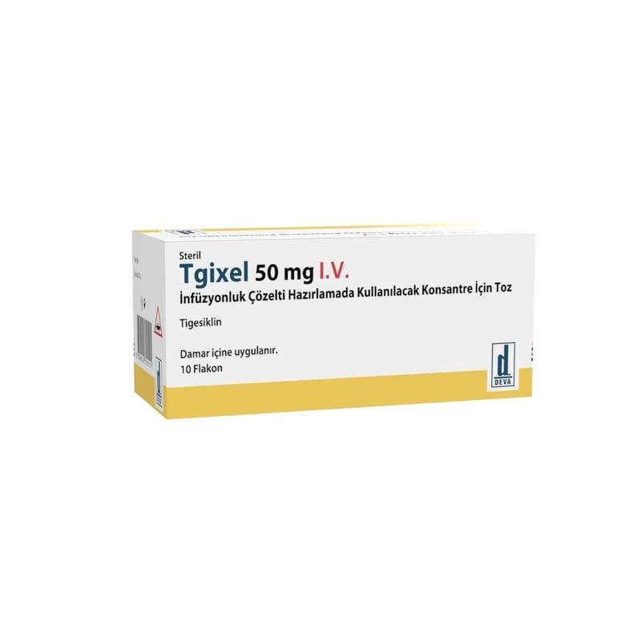

Tgixel 50 mg I.V. İnfüzyonluk Çözelti Hazirlamada Kullanilacak Konsantre İçin Toz , 10 Adet

Ne için kullanılır
KT · Bölüm 1 TGİXEL 10 flakonluk ambalajlarda sunulmaktadır. Sarı-Turuncu renkte, liyofilize (dondurularak kurutulmuş) kütle şeklindedir. Damar yoluyla kullanılmak üzere sulandırılarak hazırlanmış çözelti sarı-turuncu renkten daha koyu olmamalıdır. Her bir flakon 50 mg tigesiklin tozu içerir. TGİXEL enfeksiyonlara sebep olan bakterilerin büyümesini durduran glisilsiklin grubuna ait bir antibiyotiktir. TGİXEL, yalnızca diğer alternatiflerinin uygun olmadığının bilindiği ya da şüphelenildiği durumlarda kullanılmalıdır. Doktorunuz aşağıda belirtilen ciddi enfeksiyonlardan birini geçirmekte olduğunuz için size TGİXEL reçete etmiştir: Metisiline dirençli komplike deri ve deri yapısı enfeksiyonları Komplike karın içi enfeksiyonları Toplum kökenli bakteriyel pnömoni (hastane ortamı dışında bulaşan akciğer enfeksiyonu) TGİXEL diyabetik ayak enfeksiyonu tedavisinde kullanılmamalıdır. Bu ilacı kullanmaya başlamadan önce bu kullanma talimatını dikkatlice okuyunuz, çünkü sizin için önemli bilgiler içermektedir. Bu kullanma talimatını saklayınız. Daha sonra tekrar okumaya ihtiyaç duyabilirsiniz. Eğer ilave sorularınız olursa, lütfen doktorunuza veya eczacınıza danışınız. Bu ilaç kişisel olarak size reçetelendirilmiştir, başkalarına vermeyiniz. Bu ilacın kullanımı sırasında, doktora veya hastaneye gittiğinizde bu ilacı kullandığınızı doktorunuza söyleyiniz. Bu talimatta yazılanlara aynen uyunuz. İlaç hakkında size önerilen dozun dışında yüksek veya düşük doz kullanmayınız.